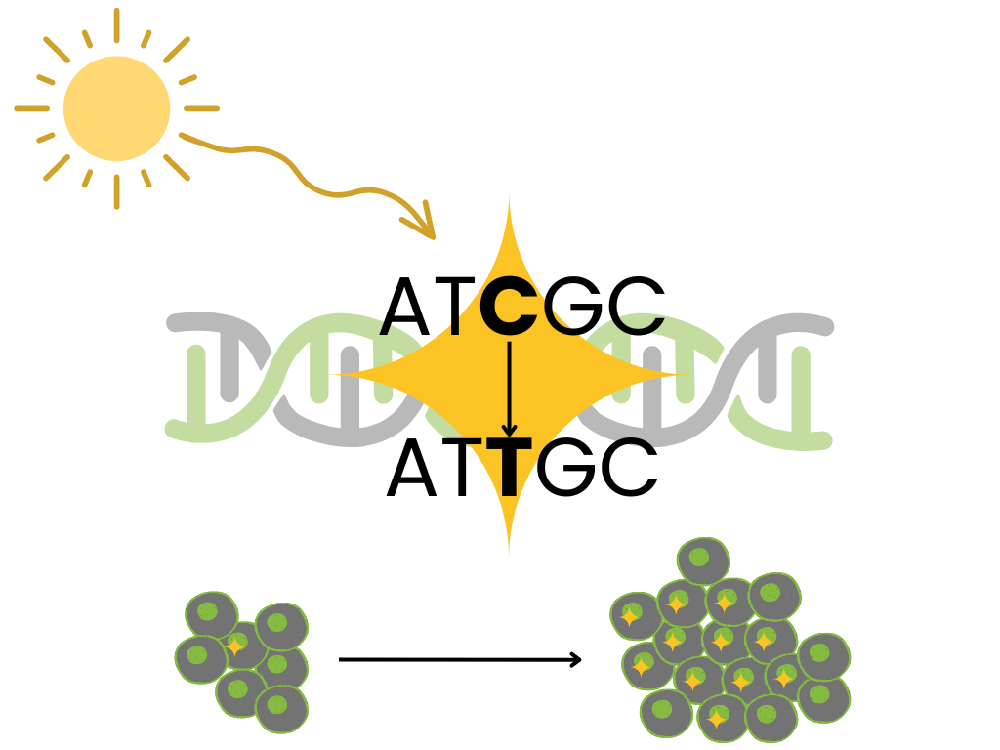

from sklearn.decomposition import NMF
import numpy as np
import pandas as pd
K = 96
G = 20
lam = 10
rank = 4
M = np.random.poisson(lam = lam, size = [K, G])
model = NMF(n_components = rank)
P_hat = model.fit_transform(M)
E_hat = model.components_Getting Started with Mutational Signatures
Mutational Signatures
NMF
Genomics
Mutational signatures model mutational processes in cancer as latent factors. This method characterizes cancer genomes in an interpretable and clinically relevant way. This article introduces the biological motivation for mutational signatures, the statistical methods used, and key literature to get you started in this field.
Referencing this post: Landy, Jenna, “Getting Started with Mutational Signatures”, Learning the Curve, February 9, 2024.
Biological Motivation
Until recently, cancer diagnosis and treatment were based primarily on the tissue of origin, clinical presentation, and tumor morphology. The ability to sequence tumor DNA has changed this. The term “cancer” now refers to many diseases “differentiated on the basis of varying combinations of cancer gene mutations” (Van Hoeck et al. 2019).
Cancer is characterized by uncontrolled cell replication due to somatic mutations—mutations in non-germline cells gained through a patient’s lifetime (Pfeifer 2010). There are many well-studied biological processes that lead to somatic mutations. Some processes are exogenous in origin. For example, in non-melanoma skin cancers, sunlight exposure leaves its trace through C-to-T transitions at dipyrimidine sequences and CC-to-TT tandem mutations. Similarly, in smoking-associated lung cancers, we see G-to-T transversions, particularly at methylated CpG sites in TP53 (Pfeifer 2010). Other mutational processes are endogenous in origin (Cannataro, Mandell, and Townsend 2022). However, there are still many unknown processes that cause somatic mutations in cancer (L. B. Alexandrov et al. 2013).

Though mutational signatures hadn’t yet been defined, Stratton, Cambelle, & Futreal perfectly summarized their biological motivation in 2009 (Stratton, Campbell, and Futreal 2009):
the catalogue of somatic mutations present in a cancer cell … represents a cumulative archaeological record of all the mutational processes the cancer cell has experienced throughout the lifetime of the patient. It provides a rich, and predominantly unmined, source of information for cancer epidemiologists and biologists with which to interrogate the development of individual tumors
Mutational signatures analysis models a tumor’s mutational landscape as the composition of multiple mutational processes working at once.
Defining Mutational Signatures
Data: Mutational Catalog \(M\)
Most signatures work focuses on single base substitution (SBS) mutations, though signatures have also been developed for double base substitutions, small insertions and deletions, copy number variations, structural variation, and RNA single base substitutions (Tate et al. 2018).
For SBSs, a “type” of mutation is defined by the change in the sequence and the nucleotides on either side. For instance, a sequence ACT mutated to AGT has a C>G substitution (the mutation) with an A on the left and a T on the right (the context). We represent this mutation type as “A[C>G]T”.
In the simplest case, we’re not concerned with which DNA strand the mutation was on, so we only consider substitutions at a C or a T. This gives six options for the substitution (C>A, C>G, C>T, T>A, T>C, T>G) and four options each for the nucleotides on the left and right, so a total of \(6 \times 4 \times 4\) = 96 SBS mutation types. We use base-pair matching to convert mutations at a G or an A into one of these 96 types.
A tumor’s mutational catalog is how often each mutation type appears across its genome. The catalog for each tumor genome \(g\), \(M_{g}\), is a vector of length 96. The full mutational catalog matrix \(M\) has dimension 96 x G where G is the total number of tumor genomes, and tumors’ catalogs are the columns.
\(M\) = mutational catalog matrix, our observed data
\(M_{kg}\) = count of mutation type \(k\) in tumor genome \(g\)
Latent Factors: Mutational Signatures \(P\)
A mutational signature is a mathematical representation of a mutational process defining how likely the mutational process is to give rise to each type of mutation. Mathematically, signature \(n\), denoted \(P_n\), is a probability distribution over these mutation types. The complete signatures matrix \(P\) has dimension 96 x N where N is the total number of signatures, and signatures are columns.
\(P\) = signature matrix, our latent factors representing mutational processes
\(P_{kn}\) = probability of mutation type \(k\) resulting from mutational signature \(n\)
\(P_{kn}\) = Pr(mutation type k | signature n) such that \(\sum_k P_{kn} = 1 \forall n\)
A common way to visualize individual signatures is as a bar plot of these probabilities, grouped based on the central mutation, where each group has 16 options for the left and right nucleotide context. Below is this type of plot for one signature, COSMIC SBS3.
Statistical Methods
In order to model mutational signatures, we need to convert our biological motivation about mutational processes into a mathematical expression using our mathematical definition of mutational signatures.
Biologically, we said
a tumor’s mutational landscape is the composition of multiple mutational processes working at once.
Mathematically, we can say
a tumor’s mutational catalog is a linear combination of multiple mutational signatures.
The weights of this linear combination are defined by a matrix \(E\), where \({E}_{ng}\) is the number of mutations in tumor genome \(g\) attributed to mutational signature \(n\). \(E_{ng}\) is often called the exposure of tumor genome \(g\) to mutational signature \(n\) or, equivalently, the contribution of mutational signature \(n\) to tumor genome \(g\). This definition gives rise to the following matrix factorization problem:
\[ \begin{aligned} M_g =& \sum_n P_n E_{ng}\\ M = PE, &\text{ all non-negative}. \end{aligned} \]
A necessary restriction is that all our matrices of interest, \(M\), \(P\), and \(E\) have non-negative values. The non-negativity constraint is trivial for the first two because \(M\) is a counts matrix and \(P\) a matrix of probabilities. The choice for \(E\) to be non-negative comes from the biology behind signatures: mutational processes can only add mutations, not get rid of them1, so these weights must be positive as well.
This matrix factorization has scale non-identifiability because \(M = PE\) and \(M = (P/2)(2E)\) are equivalent solutions. For this reason, we can drop the restriction that \(\sum_k P_{kn} = 1 \forall n\) and rescale the solution after the fact.
Non-negative matrix factorization (NMF) is a widely used approach for this type of problem. R and Python packages can be used to run NMF on your local computer easily. The example below shows in each language (1) generating a mutational catalog matrix \(M\) with \(G\) = 20 samples and no true signal from latent factors and (2) performing NMF and extracting final estimates \(\hat P\) and \(\hat E\).
library(NMF)
K <- 96
G <- 20
lambda <- 10
rank <- 4
M <- matrix(
rpois(n = K*G, lambda = lambda),
nrow = K, ncol = G
)
nmf_res <- NMF::nmf(M, rank = rank)
P_hat <- nmf_res@fit@W
E_hat <- nmf_res@fit@HA separate post with the details of this algorithm and its variations is in progress.
Key Literature
This is a set of papers that I found very useful to get a solid footing in this field. This is by no means a comprehensive list of all mutational signatures analysis methods or applications.
Nik-Zainal, Alexandrov, et al. (2012) was the first paper to perform mutational signatures analysis as I described above. They looked at the mutational catalogs of 21 breast cancer genomes to extract five mutational signatures. They report a signature that “is likely due to deamination of 5-methylcytosine, a relatively well-characterized mutational process”, while the rest had unknown origins. Its companion paper (Nik-Zainal, Van Loo, et al. 2012) divides somatic mutations into those shared by all cells in the sample and those that are subclonal. By classifying whether mutations were early clonal, late clonal, or subclonal in regions of copy number gains, they are able to assess the relative contributions of the five signatures at different times during each cancer’s evolution.
Ludmil B. Alexandrov et al. (2013) extends these methods into a reproducible framework. They apply this framework to a mutational catalog matrix with samples from 30 different types of cancer and reveal 21 distinct signatures. Some signatures are observed in only one or a subset of cancer types, while others are shared.
Fischer et al. (2013) further extends the NMF methods to incorporate mutational opportunity and uses a probabilistic form of NMF solved using the expectation maximization (EM) algorithm rather than gradient descent. Rosales et al. (2016) uses Bayesian NMF and introduces the idea of a differential exposure score associating exposures with clinical data to see how the activity of each signature correlates to clinical results. They also show that the exposure matrix can be used to cluster tumor samples into clinically meaningful subtypes.
Nik-Zainal and Morganella (2017) again compares mutational signatures across cancer types and indicates the need for multi-study and multi-cancer methods. Grabski, Trippa, and Parmigiani (2023) satisfies this need with a Bayesian NMF approach that can jointly analyze multiple mutational catalog matrices, such as different studies or cancer types. This method allows for signatures to be specific to one study or shared by any number of studies.
Tate et al. (2018) introduces COSMIC: the Catalogue Of Somatic Mutations In Cancer, a resource kept up to date with the most recently discovered mutational signatures, their proposed etiology, and the cancer types they impact. SBS signatures can be found here and can easily be downloaded for use in analysis. COSMIC has been updated since, most recently with analysis from L. B. Alexandrov et al. (2020).
Other important references include Baez-Ortega and Gori (2017), which reviews various mathematical models and computational techniques for mutational signature analysis, and Kucab et al. (2019), which experimentally validates the link between certain mutagens and mutational signatures. Van Hoeck et al. (2019) describes the status of mutational signature analysis and discusses future challenges.
References
Alexandrov, Ludmil B., Jaegil Kim, Nicholas J. Haradhvala, Mi Ni Huang, Alvin Wei Tian Ng, Yang Wu, Arnoud Boot, et al. 2020. “The Repertoire of Mutational Signatures in Human Cancer.” Nature 578 (7793): 94–101. https://doi.org/10.1038/s41586-020-1943-3.
Alexandrov, Ludmil B., Serena Nik-Zainal, David C. Wedge, Samuel A. J. R. Aparicio, Sam Behjati, Andrew V. Biankin, Graham R. Bignell, et al. 2013. “Signatures of Mutational Processes in Human Cancer.” Nature 500 (7463): 415–21. https://doi.org/10.1038/nature12477.
Alexandrov, Ludmil B., Serena Nik-Zainal, David C. Wedge, Peter J. Campbell, and Michael R. Stratton. 2013. “Deciphering Signatures of Mutational Processes Operative in Human Cancer.” Cell Reports 3 (1): 246–59. https://doi.org/10.1016/j.celrep.2012.12.008.
Baez-Ortega, Adrian, and Kevin Gori. 2017. “Computational Approaches for Discovery of Mutational Signatures in Cancer.” Briefings in Bioinformatics 20 (1): 77–88. https://doi.org/10.1093/bib/bbx082.
Cannataro, Vincent L., Jeffrey D. Mandell, and Jeffrey P. Townsend. 2022. “Attribution of Cancer Origins to Endogenous, Exogenous, and Preventable Mutational Processes.” Edited by Melissa Wilson. Molecular Biology and Evolution 39 (5). https://doi.org/10.1093/molbev/msac084.
Fischer, Andrej, Christopher JR Illingworth, Peter J Campbell, and Ville Mustonen. 2013. “EMu: Probabilistic Inference of Mutational Processes and Their Localization in the Cancer Genome.” Genome Biology 14 (4): R39. https://doi.org/10.1186/gb-2013-14-4-r39.
Grabski, Isabella N., Lorenzo Trippa, and Giovanni Parmigiani. 2023. “Bayesian Multi-Study Non-Negative Matrix Factorization for Mutational Signatures.” http://dx.doi.org/10.1101/2023.03.28.534619.
Kucab, Jill E., Xueqing Zou, Sandro Morganella, Madeleine Joel, A. Scott Nanda, Eszter Nagy, Celine Gomez, et al. 2019. “A Compendium of Mutational Signatures of Environmental Agents.” Cell 177 (4): 821–836.e16. https://doi.org/10.1016/j.cell.2019.03.001.
Nik-Zainal, Serena, Ludmil B. Alexandrov, David C. Wedge, Peter Van Loo, Christopher D. Greenman, Keiran Raine, David Jones, et al. 2012. “Mutational Processes Molding the Genomes of 21 Breast Cancers.” Cell 149 (5): 979–93. https://doi.org/10.1016/j.cell.2012.04.024.
Nik-Zainal, Serena, and Sandro Morganella. 2017. “Mutational Signatures in Breast Cancer: The Problem at the DNA Level.” Clinical Cancer Research 23 (11): 2617–29. https://doi.org/10.1158/1078-0432.ccr-16-2810.
Nik-Zainal, Serena, Peter Van Loo, David C. Wedge, Ludmil B. Alexandrov, Christopher D. Greenman, King Wai Lau, Keiran Raine, et al. 2012. “The Life History of 21 Breast Cancers.” Cell 149 (5): 994–1007. https://doi.org/10.1016/j.cell.2012.04.023.
Pfeifer, Gerd P. 2010. “Environmental Exposures and Mutational Patterns of Cancer Genomes.” Genome Medicine 2 (8): 54. https://doi.org/10.1186/gm175.
Rosales, Rafael A, Rodrigo D Drummond, Renan Valieris, Emmanuel Dias-Neto, and Israel T da Silva. 2016. “signeR: An Empirical Bayesian Approach to Mutational Signature Discovery.” Edited by Alfonso Valencia. Bioinformatics 33 (1): 8–16. https://doi.org/10.1093/bioinformatics/btw572.
Stratton, Michael R., Peter J. Campbell, and P. Andrew Futreal. 2009. “The Cancer Genome.” Nature 458 (7239): 719–24. https://doi.org/10.1038/nature07943.
Tate, John G, Sally Bamford, Harry C Jubb, Zbyslaw Sondka, David M Beare, Nidhi Bindal, Harry Boutselakis, et al. 2018. “COSMIC: The Catalogue Of Somatic Mutations In Cancer.” Nucleic Acids Research 47 (D1): D941–47. https://doi.org/10.1093/nar/gky1015.
Van Hoeck, Arne, Niels H. Tjoonk, Ruben van Boxtel, and Edwin Cuppen. 2019. “Portrait of a Cancer: Mutational Signature Analyses for Cancer Diagnostics.” BMC Cancer 19 (1). https://doi.org/10.1186/s12885-019-5677-2.
Footnotes
The use positive weights for mutational signatures is different from other matrix decomposition or dictionary learning applications to genomics. For example, if we were looking at RNA-seq data, a mutational process may increase or decrease gene expression, so negative weights would be allowed.↩︎